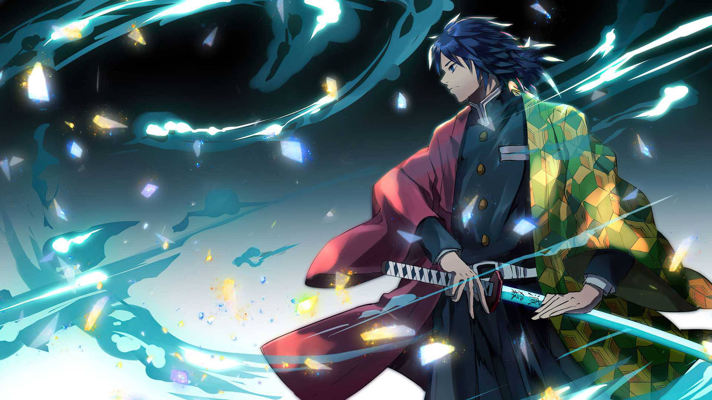
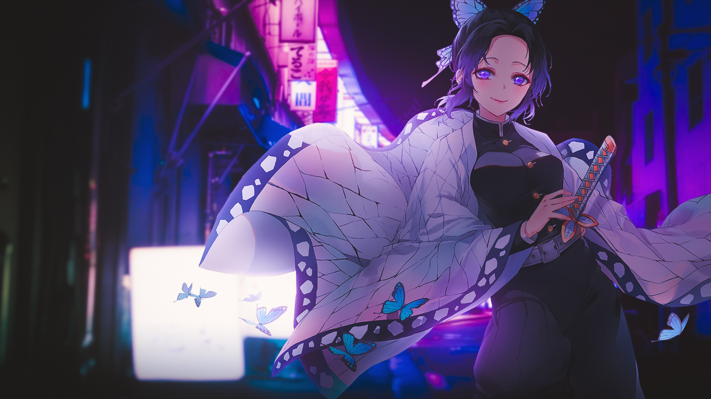
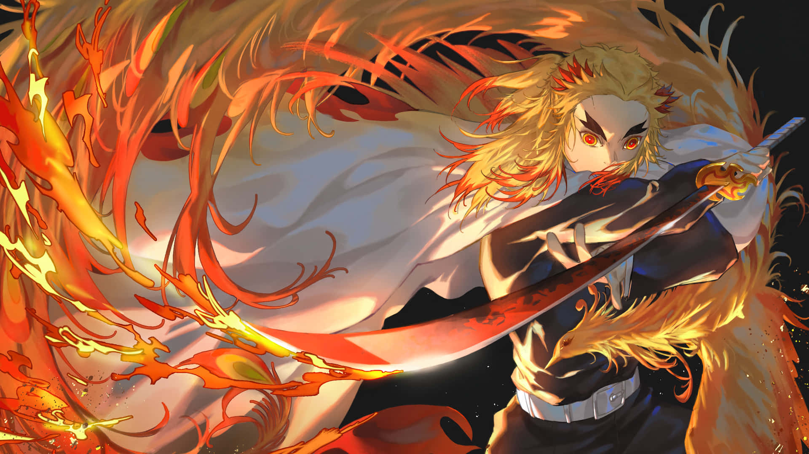
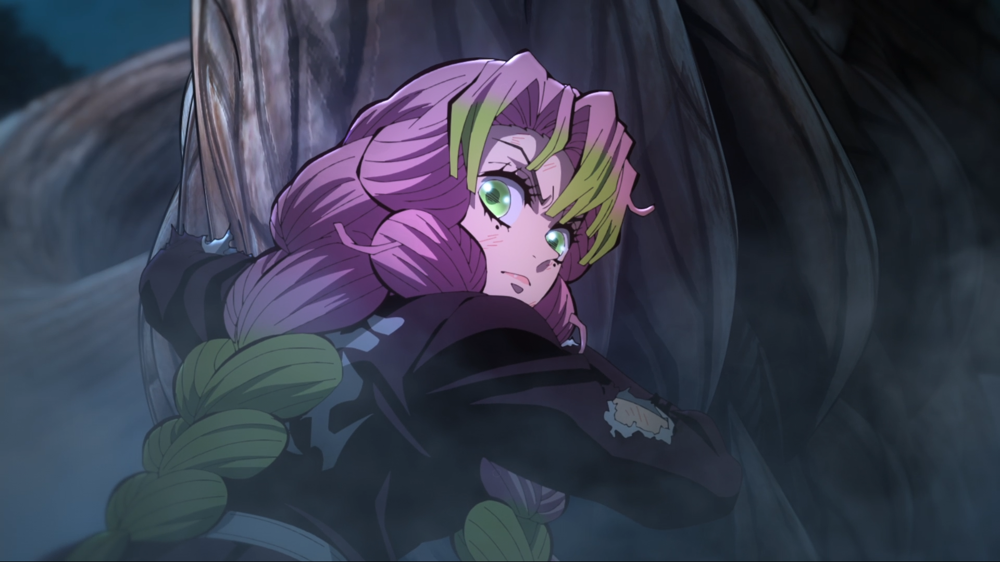
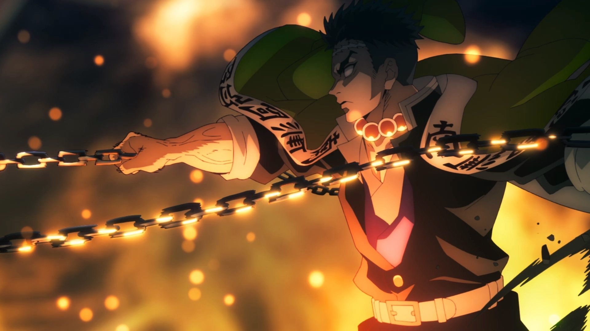
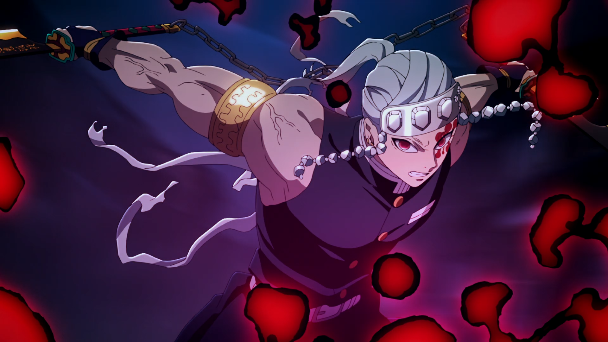
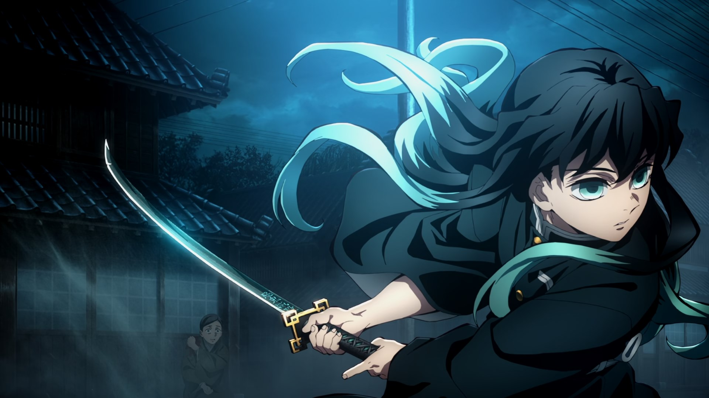

.jpg!d)




Giyu Tomioka
Hashira da Água
Utilizando a técnica de respiração da água, treinado pelo mestre: Sakonji Urokodaki.Além das dez formas tradicionais de respiração da água, Tomioka criou uma poderosa 11ª forma. Essa técnica é utilizada contra o demônio Rui e consiste em manter completa tranquilidade, o que o garante velocidade imperceptível.
Shinobu Kocho
Hashira do Inseto
Shinobu, além de ser uma exímia espadachim, tem experiência médica que ela leva ao combate. Apesar de não ter a mesma força física de seus companheiros, ela é igualmente letal, utilizando uma lâmina mais fina coberta por um veneno mortífero.Ela utiliza a agilidade superior para alvejar os oponentes com múltiplos golpes venenosos e, por fim, os matando como um Pilar do Inseto deveria.
Kyojuro Rengoku
Hashira das Chamas
Rengoku utiliza a técnica da respiração das chamas, que consiste em poderosos golpes feitos para incapacitar os oponentes.É extremamente extrovertido e confiante, tanto nas suas habilidades quanto na missão do Esquadrão de Exterminadores de Onis.
Mitsuri Kanroji
Hashira da Amor
Caracterizada pelos cabelos rosados com pontas verdes e uma personalidade apaixonada, Mitsuri é uma pessoa tímida. Em combate, ela usa a técnica de respiração do amor, que dispara chicotadas apaixonadas e mortais.Misturando agilidade, força e uma espada inusitada capaz de se estender e se retrair, a Hashira apresenta versatilidade e pode surpreender muito em combate.
Obanai Iguro
Hashira das Serpentes
O jovem Obanai é um excelente espadachim que, apesar de ser parcialmente cego do olho direito, não deixa os oponentes escaparem. Ele utiliza uma espada assimétrica da categoria cris, que remete ao corpo esguio de uma cobra.Serpente é justamente a técnica de respiração que ele utiliza, um derivado da respiração da água dominada por Giyu. Os métodos de combate se destacam por movimentos que confundem o inimigo, sem dar a ele uma chance de fuga.
Sanemi Shinazugawa
Hashira do Vento
De visual excêntrico e explosivo, Sanemi utiliza a respiração do Vento, o que faz com que ele aja como um furacão no campo de batalha. Em uma das formas da técnica, por exemplo, ele avança para cima do oponente girando como um ciclone.A respiração de Sanemi é caracterizada pela incessante cadência de golpes e, ironicamente, pouco espaço de tempo para que o oponente respire.
Gyomei Himejima
Hashira da Rocha
Gyomei se destacou entre os Hashiras por ser o maior do grupo e por aparecer sempre chorando sem parar. Esse gigante gentil utiliza uma arma de correntes no melhor estilo kusarigama, a fim de compensar o fato de ser cego assim, ele consegue ouvir o som das correntes e utilizá-la mais efetivamente do que com uma espada.O Hashira utiliza a respiração da rocha, que pode ser usada apenas em conjunto com armas da categoria que ele usa. A técnica é caracterizada por golpes pesados e uso do terreno para refletir e bloquear ataques.
Tengen Uzui
Hashira do Som
Tengen, notório pela tatuagem vermelha em torno do olho esquerdo, utiliza duas grandes espadas, maiores do que uma lâmina Nichirin comum, conectadas por uma corrente. A respiração do som transforma o combate do Hashira em uma dança rítmica após ele analisar os padrões de sons por meio dos movimentos do oponente. Além disso, ele utiliza bombas para criar grandes explosões acompanhadas de estrondos sonoros.
Muichiro Tokito
Hashira da Névoa
Muichiro é um introspectivo e distraído jovem espadachim. Ele utiliza uma espada comum e alcançou o posto de Pilar da sociedade de extermínio em apenas dois meses de treinamento.Abraçando a respiração da névoa, Muichiro foca em depravar os sentidos dos oponentes, como a névoa faz. Assim, os golpes dele consistem em ataques velozes que deixam os inimigos sem saberem de onde a ferida veio.